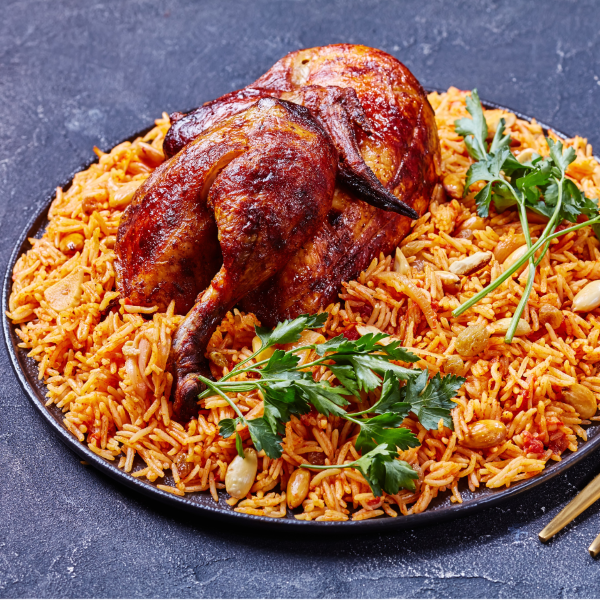

Kabsa

Description
A one-pot dish more common in mediterranean area, kabsa is simple combination of chicken over rice.
Ingredients
- White rice
- Chicken
- Butter
- Spices (salt, black pepper, garlic powder, coriander, turmeric, and cardamom should be enough)
- Onions
- Minced garlic
- Crushed tomatoes
- Tomato paste
Steps
- Sauté the onions in a large pot with the butter until their color darkens.
- Add the minced garlic.
- Add the chicken followed by a generous amount of tomato paste and the spices.
- Mix until the chicken is fully coated and add enough water to cover the chicken.
- Let it boil for 20 minutes on medium heat.
- Add the washed rice to the pot.
- Bring it to a boil then let it simmer for another 20 minutes.
- Enjoy!
Home